SSL For Frees에서 무료 SSL 인증서 발급받기
다른 글에서 Let’s encrypt로 인증서를 툴을 통해 자동으로 발급받는 내용을 확인했습니다. 여기서는 다른 사람에 SSL Certificate을 발급받은 것을 사용할 때를 가정한 테스트하기 위한 예비단계로 SSL Certificate을 발급 받는 과정을 진행해 보겠습니다. 테스트이므로 무료 인증서를 발급 받을 수 있는 사이트 중에 하나인 SSL For Free을 사용하겠습니다.
해당 사이트는 현재 정책이 변경되어 3번까지만 무료로 발급받을 수 있습니다.
-
SSL For Free 사이트로 이동합니다.
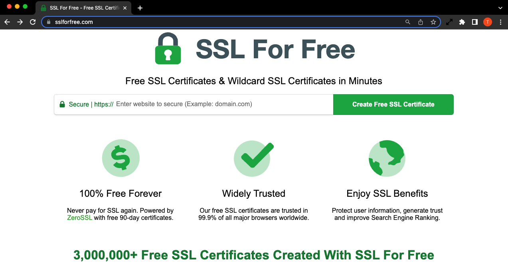
-
계정이 없는 경우 Register 메뉴를 통해 회원가입을 합니다.
-
New Certificate을 클릭합니다.
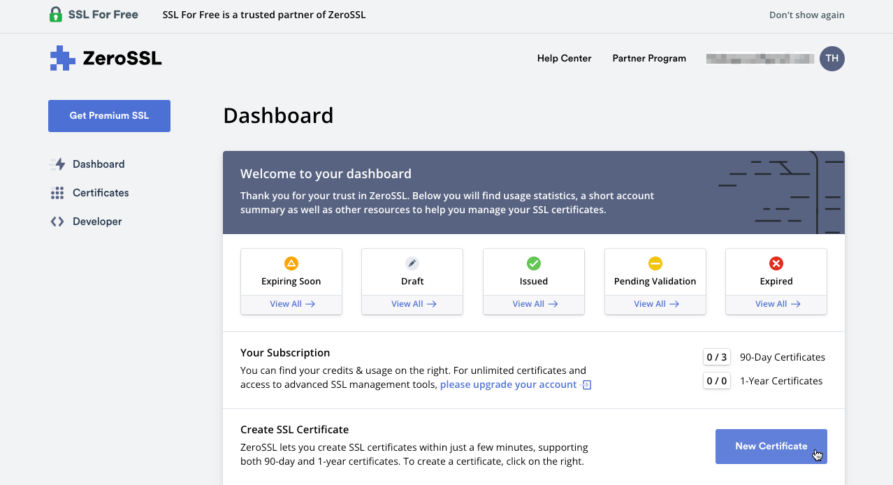
-
Enter Domain 항목에 가지고 있는 도메인 주소를 입력합니다. 발급될 인증서는 체크표시로 뜨는 주소에 한해서 사용할 수 있습니다. 확인 후 Next Step을 클릭합니다.
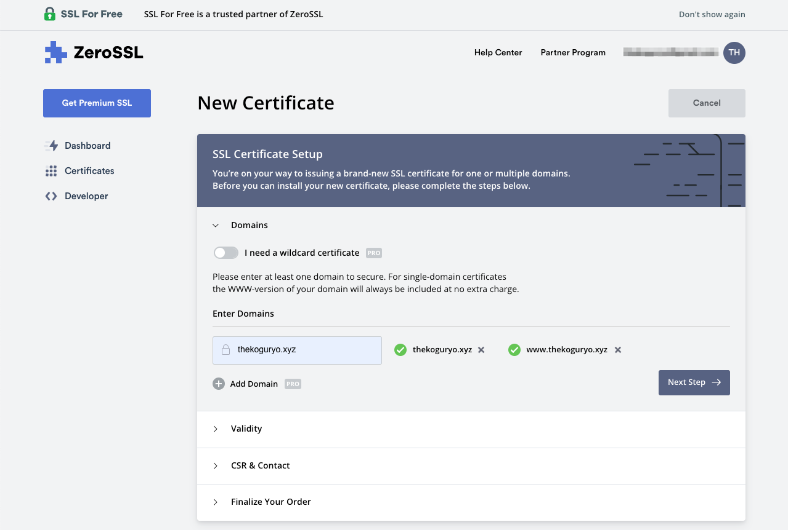
-
유효기간은 무료로 제공하는 90일짜리로 선택합니다. 확인 후 Next Step을 클릭합니다.
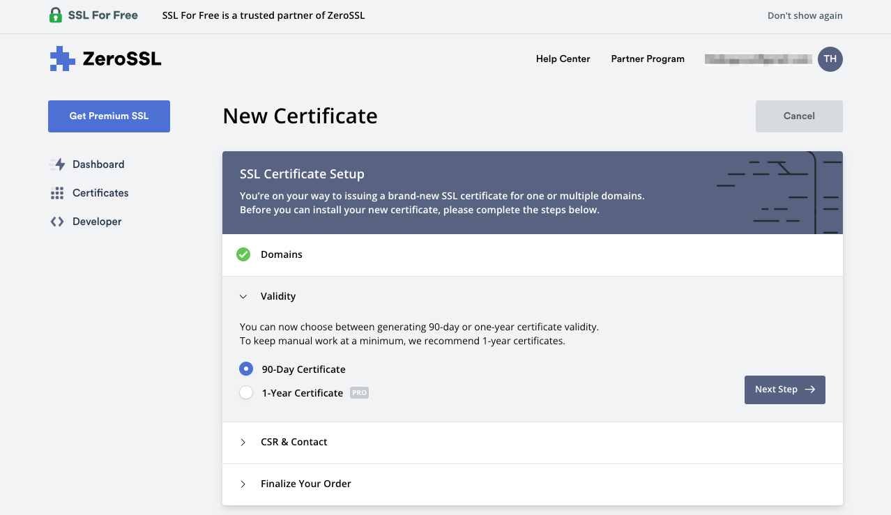
-
인증서 생성을 위한 Certificate Signing Request (CSR) 정보(조직, 이메일, 주소 등등)는 테스트 용도이므로, 기본값을 사용합니다. 원하는 경우 직접 입력해도 됩니다. 확인 후 Next Step을 클릭합니다.
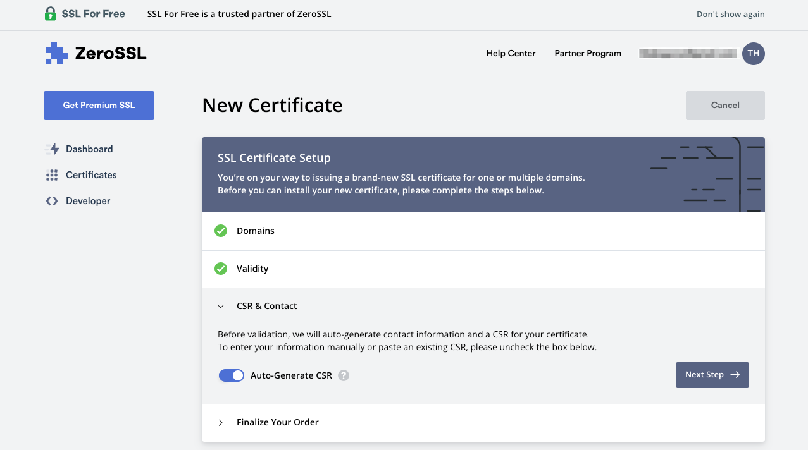
-
요금 플랜은 무료인 Free를 선택합니다. 확인 후 Next Step을 클릭합니다.
-
사용한 도메인의 실 소유자임을 검증하는 단계입니다. 세가지 방법이 있습니다.
- 이메일로 검증
- DNS(CNAME)으로 검증
- HTTP 파일 업로드로 검증
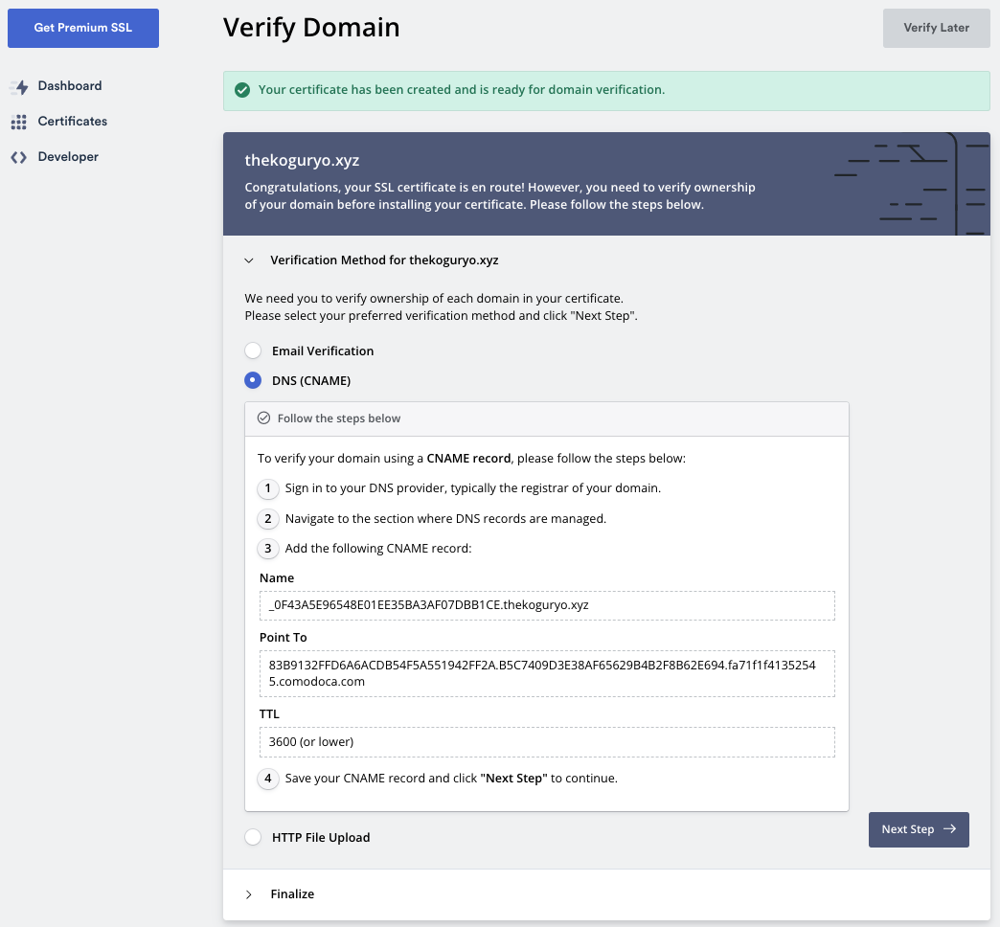
-
저는 편의상 두번째 DNS(CNAME)을 통해 검증하겠습니다.
-
도메인을 구입한 사이트에서 위 정보를 등록합니다. 저는 GoDaddy 사이트에서 아래와 같이 CNAME을 추가하였습니다.
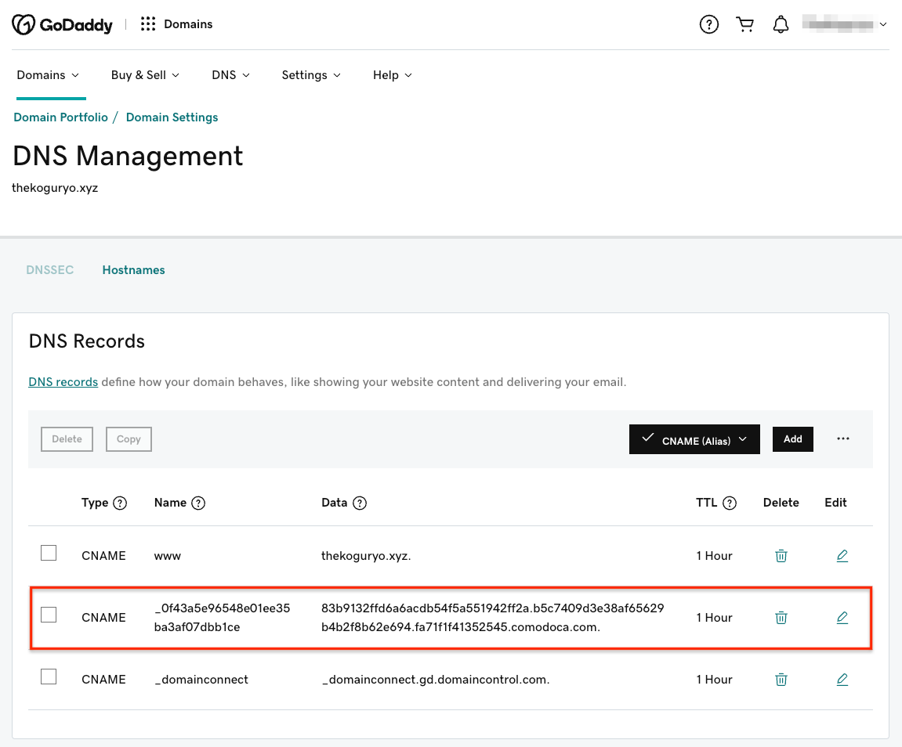
-
도메인 검증화면으로 돌아가서 Next Step을 클릭합니다.
-
검증을 위해 Verify Domain을 클릭합니다.
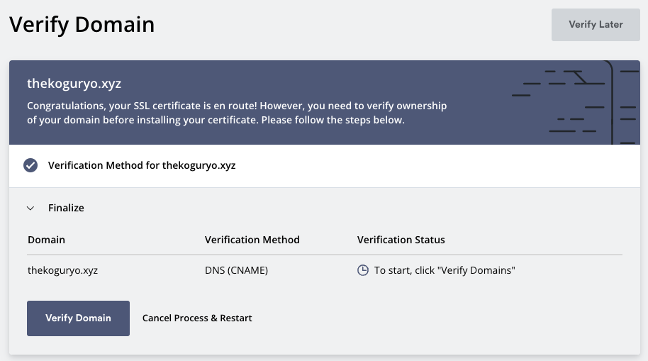
-
검증이 완료되면, 인증서 생성이 시작됩니다.
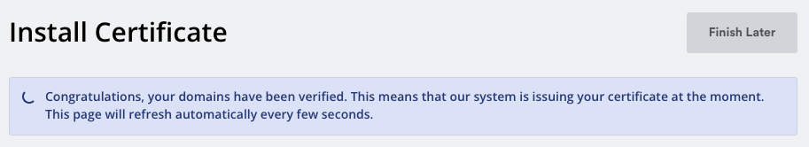
-
인증서 발급이 완료되었습니다.
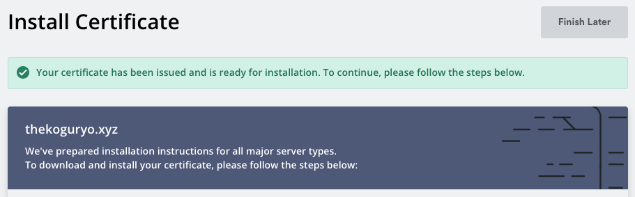
-
설치할 서버 타입이 있는 경우 선택합니다. 저는 기본 포맷을 선택했습니다.
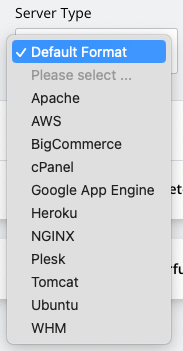
-
인증서 zip 파일을 다운로드 받습니다.
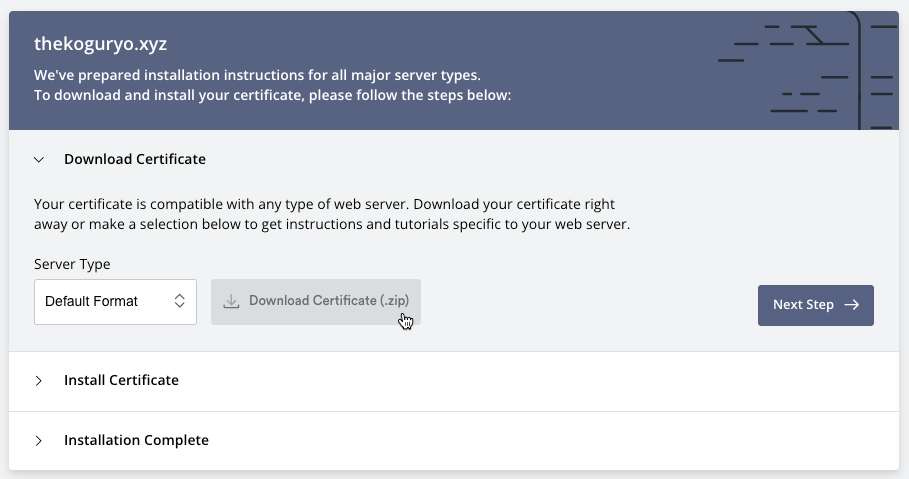
-
압축파일을 풀면 다음 세가지 파일이 포함되어 있습니다.
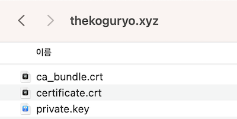
이 글은 개인으로서, 개인의 시간을 할애하여 작성된 글입니다. 글의 내용에 오류가 있을 수 있으며, 글 속의 의견은 개인적인 의견입니다.